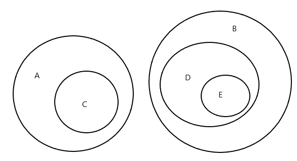
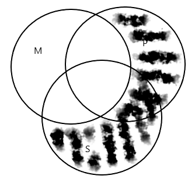

Bacalaureat Logică 2021 | Sesiunea august
Citește aici rezolvările bacului la logică din august 2021!
Subiectul I
30 de puncte
A. Scrieţi pe foaia de examen litera corespunzătoare răspunsului corect, pentru fiecare dintre enunțurile de mai jos. Este corectă o singură variantă de răspuns. 20 de puncte
1. Fundamentul demonstrației trebuie să fie alcătuit numai din propoziții:
a. false
b. infirmate
c. adevărate
d. probabile
2. Raționamentul Dacă toate automobilele prezentate la expoziție sunt performante, atunci niciun automobil prezentat la expoziție nu este neperformant este un exemplu de raționament:
a. inductiv tare
b. deductiv imediat
c. inductiv slab
d. deductiv mediat
3. Raportul logic de ordonare se stabilește între termenii:
a. pisică - felină
b. elev de gimnaziu - elev de liceu
c. vapor - avion
d. avocat - femeie
4. Subiectul logic al propoziției Unii oameni care emigrează sunt intelectuali este:
a. oameni
b. unii oameni
c. oameni care emigrează
d. unii oameni care emigrează
5. Printre elementele care fac parte din structura clasificării există:
a. cuantorul clasificării
b. teza clasificării
c. regulile clasificării
d. criteriul clasificării
6. Din punct de vedere extensional, termenul figură geometrică este:
a. singular, colectiv
b. concret, compus
c. absolut, pozitiv
d. distributiv, precis
7. O însușire a inducției incomplete este reprezentată de:
a. caracterul cert al concluziei
b. caracterul probabil al concluziei
c. trecerea de la premise universale la o concluzie particulară
d. trecerea de la premise particulare la o concluzie particulară
8. Inducția completă este un tip de raționament în care:
a. se analizează fiecare obiect dintr-o clasă finită
b. concluzia are un caracter probabil
c. se analizează unele obiecte dintr-o clasă finită
d. se analizează fiecare obiect dintr-o clasă infinită
9. Termenul elev, comparativ cu termenul elev de liceu, are:
a. extensiunea mai mare, dar intensiunea mai mică
b. intensiunea mai mare, dar extensiunea mai mică
c. extensiunea egală, dar intensiunea mai mică
d. intensiunea egală, dar extensiunea mai mică
10. Propoziția Unele seriale TV sunt inspirate din realitate este:
a. universală afirmativă
b. universală negativă
c. particulară afirmativă
d. particulară negativă
B. Fie termenii A, B, C, D şi E astfel încât termenul A se află în raport de contradicție cu termenul B; termenul C este specie a lui A și în raport de opoziție cu termenii B, D, și E; termenul D este specie a termenului B, în opoziție cu termenii A și C, dar este supraordonat față de termenul E. 1. Reprezentaţi, prin metoda diagramelor Euler, pe o diagramă comună, raporturile logice dintre cei cinci termeni. 2 puncte 2.
Stabiliţi, pe baza raporturilor existente între termenii A, B, C, D, E care dintre următoarele propoziţii sunt adevărate şi care sunt false (notaţi propoziţiile adevărate cu litera A, iar propoziţiile false cu litera F). 8 puncte
a. Toţi B sunt D.
b. Niciun E nu este A.
c. Unii A sunt B. d. Unii C nu sunt A.
e. Toți D sunt A.
f. Toți B sunt E.
g. Nici un C nu este D.
h. Unii A sunt C.
Rezolvare
A.
1 – c
2 – b
3 – a
4 – c
5 – d
6 – d
7 – b
8 – a
9 – a
10 – c
B.
1.

2.
a – F
b – A
c – F
d – F
e – F
f – F
g – A
h – A
Subiectul al II-lea
30 de puncte
Se dau următoarele propoziţii:
1. Toate automobilele electrice sunt nepoluante.
2. Unele curente artistice din secolul XXI sunt dificil de înțeles.
3. Nicio pasăre migratoare nu este solitară.
4. Unele hituri rock nu sunt lansate de formații celebre.
A. Construiţi, atât în limbaj formal cât şi în limbaj natural, subalterna propoziției 1, contradictoria propoziției 2, contrara propoziției 3 și subcontrara propoziției 4. 8 puncte
B. Aplicaţi explicit operaţiile de conversiune şi obversiune, pentru a deriva conversa şi obversa corecte ale fiecăreia dintre propoziţiile 2 şi 3, atât în limbaj formal, cât şi în limbaj natural. 8 puncte
C. Construiţi, atât în limbaj formal cât şi în limbaj natural, obversa conversei subalternei contradictoriei propoziției 4, respectiv, obversa conversei propoziției 1. 6 puncte
D. Doi elevi, X şi Y, opinează astfel:
X: Deoarece unele portocale nu sunt citrice de culoare portocalie, rezultă că unele citrice de culoare portocalie nu sunt portocale.
Y: Deoarece unele silogisme sunt valide, înseamnă că unele silogisme nu sunt nevalide.
Pornind de la această situație:
a. scrieți, în limbaj formal, opiniile celor doi elevi; 4 puncte
b. precizați corectitudinea/incorectitudinea logică a raționamentelor formalizate; 2 puncte
c. explicați corectitudinea/incorectitudinea logică a raționamentului elevului X. 2 puncte
Rezolvare
A.
Subalterna propoziției 1: SiP – Unele automobile electrice sunt nepoluante.
Contradictoria propoziției 2: SeP – Niciun curent artistic din secolul XXI nu este dificil de înțeles.
Contrara propoziției 3: SaP – Toate păsările migratoare sunt solitare.
Subcontrara propoziției 4: SiP – Unele hituri rock sunt lansate de formații celebre.
B.
Conversa propoziției 2: PiS – Unele curente dificil de înțeles sunt curente artistice din secolul XXI.
Conform operației: (-) SiP (-) → (-) PiS (-)
Observa propoziției 2: SoP̅ – Unele curente artistice din secolul XXI nu sunt ușor de înțeles.
Conform operației: SiP → SoP̅
Conversa propoziției 3: PeS – Nicio pasăre solitară nu este o pasăre migratoare.
Conform operației: (+) SeP (+) → (+) PeS (+)
Obversa propoziției 3: SaP̅ – Toate păsările migratoare sunt ne-solitare.
Conform operației: SeP → SaP̅
C.
Obversa conversei subalternei contradictoriei propoziției 4: PoS̅ - Unele piese lansate de formații celebre nu sunt non-hituri rock.
Propoziția 4 este de tip SoP. Contradictoria ei este SaP. Subalterna lui SaP este SiP. Conversa lui SiP este PiS, iar obversa acestei propoziții este PoS̅.
Obversa conversei propoziției 1: PoS̅ - Unele vehicule nepoluante nu sunt non-automobile electrice.
Propoziția 1 este de tip SaP. Conversa acesteia este PiS. Obversa lui PiS este PoS̅.
D.
a.
Opinia elevului X în limbaj formal: (-) SoP (+) →(-) PoS (+)
Opinia elevului Y în limbaj formal: SiP → SoP̅
b.
Raționamentul elevului X este incorect, conversiunea este în acest caz nevalidă. Raționamentul elevului Y este corect, fiind o obversiune validă.
c.
Raționamentul elevului X reprezintă o conversiune nevalidă pentru că nu respectă legea distribuirii termenilor, conform căreia un termen distribuit în concluzie trebuie să fie distribuit și în premisă. În acest caz, termenul S nu este distribuit și în premisă, ceea ce determină incorectitudinea raționamentului. Propoziția universală negativă nu are conversă.
Subiectul al III-lea
30 de puncte
A. Fie următoarele două moduri silogistice: eao-1, aaa-2.
1. Scrieți schema de inferență corespunzătoare fiecăruia dintre cele două moduri silogistice date şi construiți, în limbaj natural, un silogism care să corespundă uneia dintre cele două scheme de inferență. 8 puncte
2. Verificați explicit, prin metoda diagramelor Venn, validitatea fiecăruia dintre cele două moduri silogistice date, precizând totodată decizia la care ați ajuns. 6 puncte
B. Construiți, atât în limbaj formal cât şi în limbaj natural, un silogism valid prin care să justificați propoziția “Toți elevii premianți sunt beneficiari ai burselor de merit”. 6 puncte
C. Fie următorul silogism:
Dacă orice faptă bună este o binefacere, atunci unele acțiuni umane sunt fapte bune, întrucât multe acțiuni umane sunt binefaceri.
Pornind de la silogismul dat, stabiliţi care dintre următoarele propoziţii sunt adevărate şi care sunt false (notaţi propoziţiile adevărate cu litera A, iar propoziţiile false cu litera F):
1. Subiectul logic al silogismului este termenul ”acțiuni umane”.
2. Termenul mediu este nedistribuit doar în premisa minoră .
3. Termenii extremi sunt nedistribuiți în concluzie.
4. Predicatul logic al silogismului este termenul „binefacere”. 4 puncte
D. Fie următoarea definiție: Tigrul este un animal carnivor.
1. Menționați o regulă de corectitudine pe care o încalcă definiția dată. 2 puncte
2. Precizați o altă regulă de corectitudine a definirii, diferită de regula identificată la punctul 1. şi construiți o definiție care să o încalce, având ca definit termenul „tigru”. 4 puncte
Rezolvare
A.
1. Modul silogistic eao-1 (Celaront) are următoarea schemă de inferență:
(+) MeP (+)
(+) SaM (-)
(-) SoP (+)
Modul silogistic aaa-2 are următoarea schemă de inferență:
(+) PaM (-)
(+) SaM (-)
(+) SaP (-)
Un silogism care corespunde schemei de inferență eao-1:
Niciun sportiv de performanță nu este indolent.
Toți participanții la Jocurile Olimpice sunt sportivi de performanță.
Unii participanți la Jocurile Olimpice nu sunt indolenți.
2. Reprezentarea grafică a modului eao-1 prin metoda diagramelor Venn:
.png)
Modul silogistic este valid dacă în urma reprezentării premiselor, regăsim reprezentată pe diagramă și concluzia. Începem prin reprezentarea premisei majore, MeP, prin hașurarea zonei de intersecție dintre cercurile M și P (zona este vidă, nu există niciun element M care să fie și P). Continuăm prin reprezentarea premisei minore, SaM. Hașurăm zona din cercul S care nu se află în intersecție cu M, zona este vidă deoarece nu există niciun element S care să nu fie și M.
Concluzia, SoP, s-ar reprezenta prin plasarea unui asterisc în zona cercului S care nu se află în intersecție cu P (cel puțin un element S nu este și P). Asteriscul nu se află deja reprezentat pentru că ambele premise au fost universale. Ne folosim în acest caz de presupoziția că extensiunea termenilor este nevidă. Observăm că, în cazul termenului S, a rămas un singur domeniu nehașurat, iar dacă extensiunea sa nu este vidă în această zonă trebuie să existe cel puțin un element. Plasăm un x rond și concluzionăm că modul silogistic dat este valid, avem reprezentarea faptului că cel puțin un element S nu este P (SoP).
Reprezentarea grafică a modului aaa-2 prin metoda diagramelor Venn:

Pentru modul aaa-2 începem prin reprezentarea premisei majore, PaM. Hașurăm zona din cercul P care nu se află în intersecție cu M, zona este vidă deoarece nu există niciun element P care să nu fie și M. Reprezentăm apoi premisa minoră, SaM, hașurând zona din cercul S care nu se află în intersecție cu M, pe aceleași considerente.
Concluzia, SaP, s-ar reprezenta prin hașurarea zonei din cercul S care nu se află în intersecție cu P. Observăm că acest lucru nu apare pe diagramă, există o porțiune a acestui domeniu în legătură cu care premisele nu ne oferă informații. Concluzionăm că modul aaa-2 este nevalid.
B.
Un silogism care justifică propoziția „Toți elevii premianți sunt beneficiari ai burselor de merit.”:
Toți elevii cu rezultate excepționale la învățătură sunt beneficiari ai burselor de merit.
Toți elevii premianți sunt elevi cu rezultate excepționale la învățătură.
Toți elevii premianți sunt beneficiari ai burselor de merit.
Silogismul corespunde schemei de inferență aaa-1 (Barbara):
(+) MaP (-)
(+) SaM (-)
(+) SaP (-)
Silogismul este valid întrucât respectă toate legile silogismului: termenul mediu este distribuit în cel puțin una din premise (premisa majoră), subiectul distribuit în concluzie este distribuit și în premisa din care provine, cel puțin una din premise este afirmativă (ambele), iar concluzia este în mod corect afirmativă, cel puțin una din premise este universală (ambele).
C.
Silogismul dat:
Unele acțiuni umane sunt binefaceri.
Toate faptele bune sunt binefaceri.
Unele acțiuni umane sunt fapte bune.
În limbaj formal:
(-) PiM (-)
(+) SaM (-)
(-) SiP (-)
1 – A
2 – F
3 – A
4 – F
D.
1. Definiția dată încalcă regula adecvării, fiind prea largă.
2. O altă regulă de corectitudine a definirii este regula definirii afirmative. O definiție care o încalcă: „Tigrul nu este nici leu, nici pisică.”